This road starts in a perfect garden and ends in a brand-new world. In between is the biggest rescue story ever told.
It is not made up. It is all from the Bible, God’s true book. And it is about you.
Here is the whole Bible story in seven words. By the end, you’ll be able to tell it on your fingers!
God saw all that he had made, and it was very good indeed.Genesis 1:31
Before there was anything, there was God. No sky, no ground, no time. Just God. Then God spoke, and everything began!
In the beginning God created the heavens and the earth.Genesis 1:1
God didn’t need any bricks or paint. He made the whole universe out of nothing, just by speaking! Light, planets, puppies, pineapples… all of it.
Hebrews 11:3On day six, God made the first man, Adam, from the dust of the ground. He breathed life into him. Then He made the first woman, Eve. They were made in God’s image: made to think, to love, to create, and most of all to know God.
That’s true of you too. You are not an accident. God made you on purpose.
So God created man in his own image; he created him in the image of God; he created them male and female.Genesis 1:27
God planted a garden in a place called Eden and gave it to Adam and Eve as their home. Rivers ran through it. Every kind of tree grew there, full of fruit. Adam even got to name all the animals!
Best of all, God was with them. They loved being with Him, and He loved them. There was no fear, no shame, no sickness and no death. Everything was perfect.
In the middle of the garden stood the tree of life and the tree of the knowledge of good and evil. Remember the tree of life. You’ll see it again at the very end of the road!
God gave Adam and Eve every tree in the garden to enjoy, except one: the tree of the knowledge of good and evil. Adam pointed to the tree so Eve would remember.
Was God being mean? No way! He gave them a whole garden full of yes and only one no. That one rule was a chance to trust Him: “God knows best.”
Genesis 2:16–17…when sin is fully grown, it gives birth to death.James 1:15
One day, a serpent slid up beside Eve. This was no ordinary snake. It was Satan, God’s enemy, the one the Bible calls “the father of lies.”
“Did God really say that?” he hissed. “You won’t die! That fruit will make you like God!” He wanted Eve to stop trusting God.
Who was telling the truth? God never lies. Not ever.
Eve looked at the fruit. It looked so good. She wanted it. So she reached out and took a bite.
Then she gave some to Adam, who was right there with her. And he ate it too.
Genesis 3:6For the very first time, people had disobeyed God. The Bible calls this sin.
Sin is when we go our own way instead of God’s way, in what we think, say or do. And the serpent grinned. His trick had worked.
Adam and Eve hid from God among the trees. When God asked what they had done, Adam blamed Eve, and Eve blamed the serpent. Sound familiar?
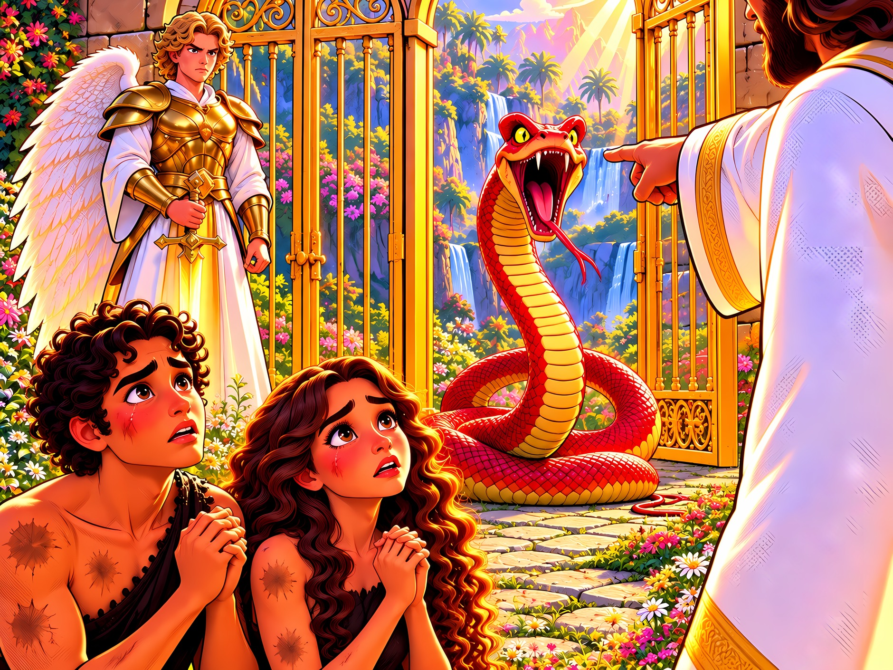
Now Adam and Eve felt afraid and ashamed. Sin had brought pain, sadness and death into God’s perfect world.
But God still came looking for them. “Where are you?” He called. And God made them clothes from animal skins. To make them, innocent animals had to die. That’s how serious sin is.
One day, a child of Eve will come. The serpent will strike His heel, but He will crush the serpent’s head.
Someone was coming to beat the enemy and open the way back home. The whole road leads to Him!
Genesis 3:15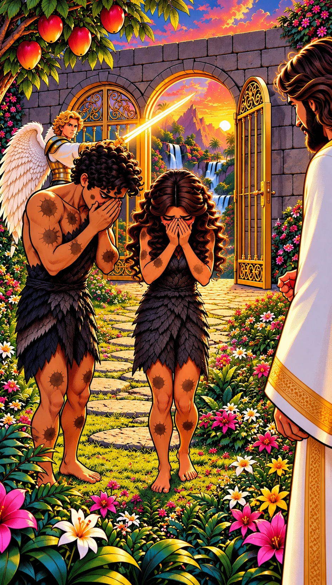
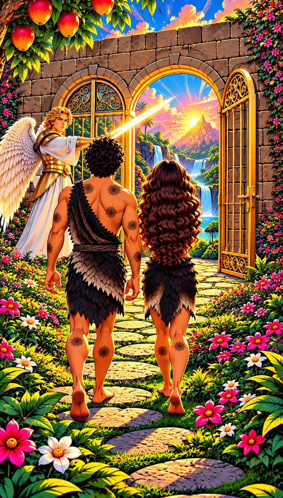
Then God sent Adam and Eve out of Eden. A mighty angel with a flaming sword guarded the way back to the tree of life. They could not go home.
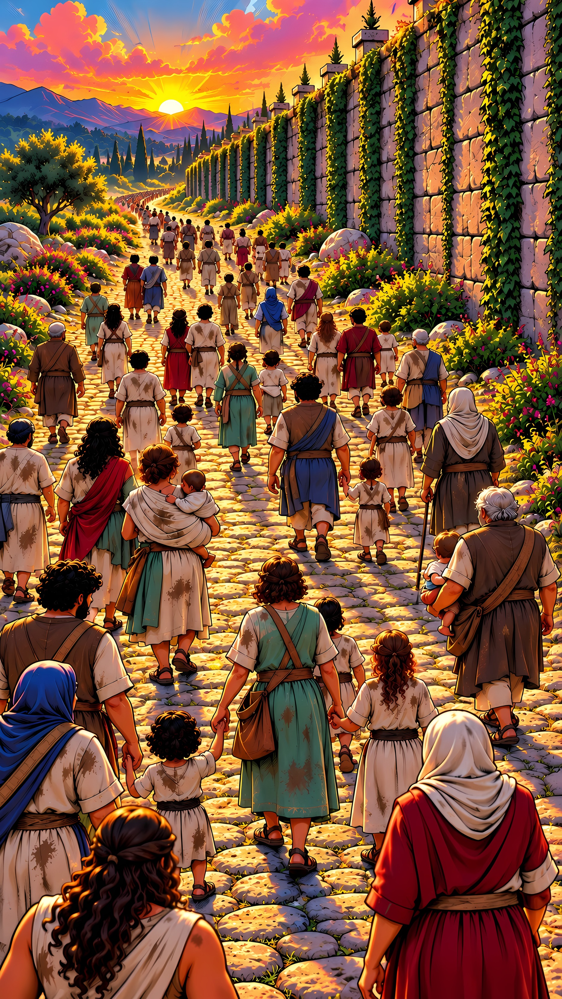
For all have sinned and fall short of the glory of God.Romans 3:23
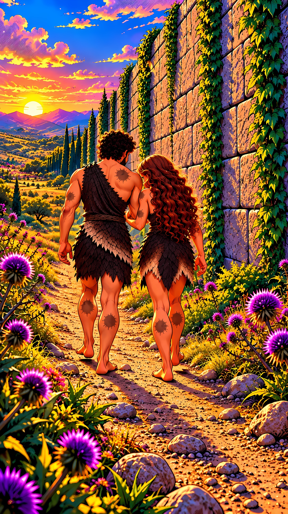
2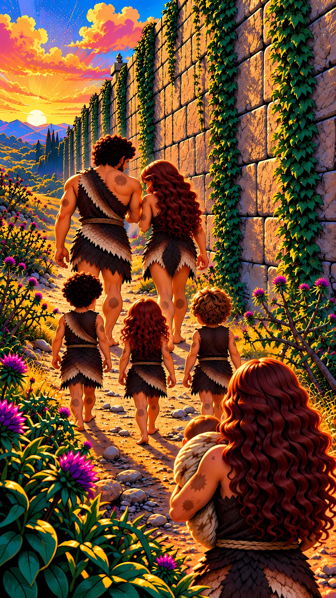
20Adam and Eve had children, and their children had children, all the way down to you and me.
But sin came along too. Their son Cain got so angry with his brother Abel that he killed him. Sin spread from one person to the next, until it reached every single one of us.
Look at all these people! Every one of them has sin marks, just like Adam and Eve. And our sin keeps us far from God.
Look closely. Three kids, just like you, walking the same road as everyone else. Same road, same sin marks.
And look where the road is heading: to a wall with ten words carved in stone…
Romans 5:12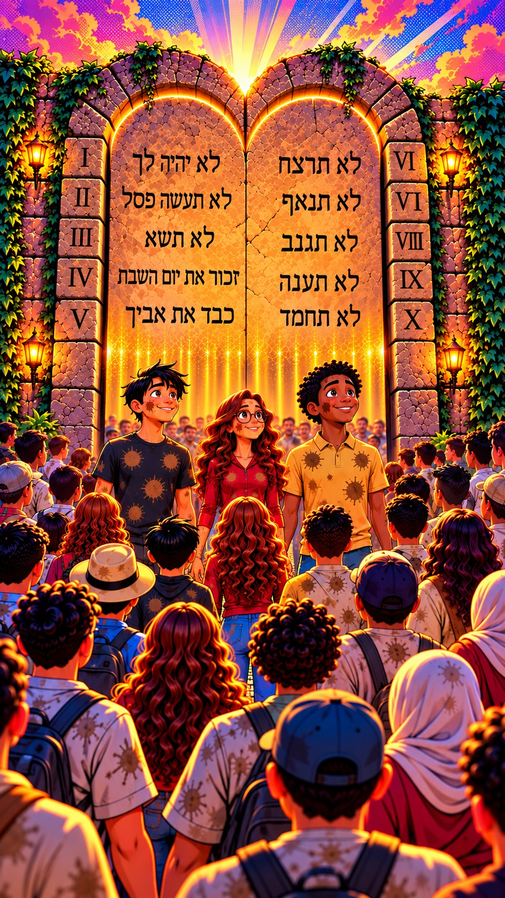
God gave His people ten good rules, called the Ten Commandments. They show us what God is like, and how He made us to live. Try the mirror test. Be honest!
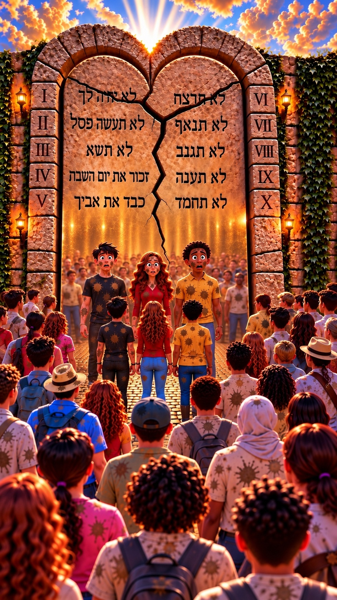
Have you ever told a lie? Even once? Have you ever taken something that wasn’t yours? That makes you a liar and a thief. That doesn’t feel very good, does it?
And that’s only two of the ten! Like Adam and Eve, we have all broken God’s law, and our sin leaves marks we can’t hide.
For whoever keeps the entire law, and yet stumbles at one point, is guilty of breaking it all.James 2:10
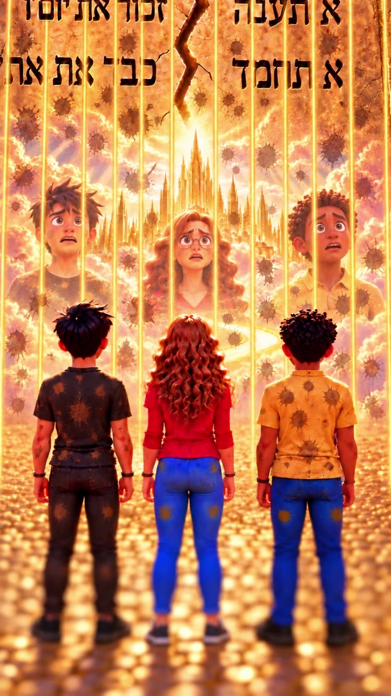
For the wages of sin is death, but the gift of God is eternal life in Christ Jesus our Lord.Romans 6:23
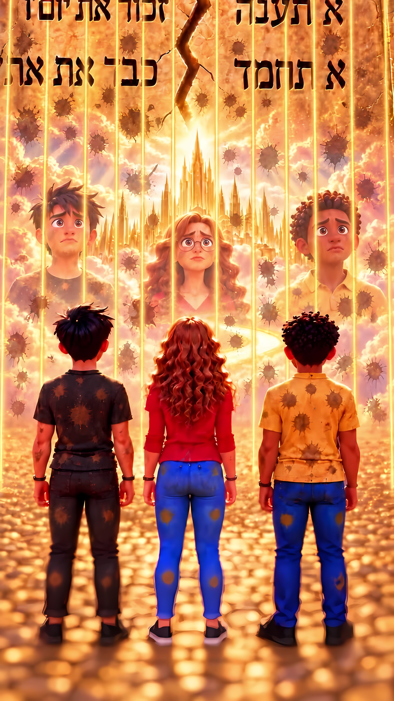
Locked out of heavenGod’s law is like a mirror. A mirror can show you the dirt on your face, but it can’t wash it off. God’s law shows us our sin, but it can’t take it away.
We were made for God’s home. But sin locks us out, just like Adam and Eve were locked out of the garden.
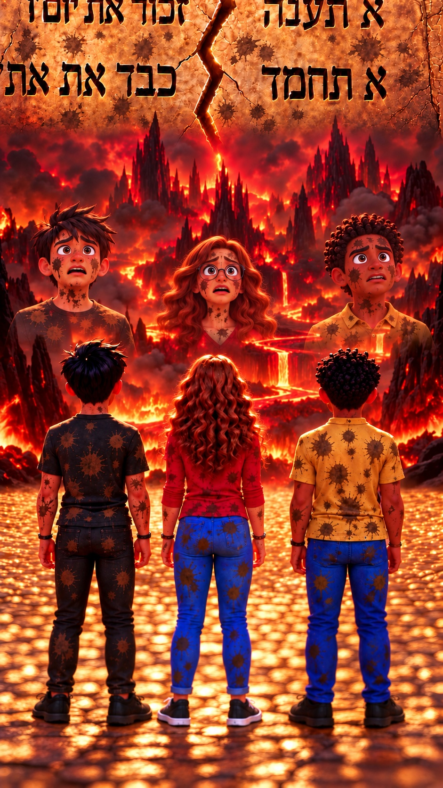
God is good and fair. Think about it: if a judge let every robber go free, would he be a good judge? No! God can’t just pretend our sin never happened.
The Bible says that if we die with our sin, we will be punished in a place called hell, far away from God forever.
That is very bad news.
Did you notice the end of the verse at the start of this stop? “…but the gift of God is eternal life.” Keep going. The road doesn’t end here!
So how can we get rid of our sin? We might try to scrub it off:
Those are all good things! But no matter how hard we scrub, the marks won’t come off.
Being good tomorrow can’t erase the wrong things we did today.
Remember the animals that died to cover Adam and Eve? And the lambs on the long road? Someone has to take our place too.
For you are saved by grace through faith, and this is not from yourselves; it is God’s gift.Ephesians 2:8
For God loved the world in this way: He gave his one and only Son, so that everyone who believes in him will not perish but have eternal life.John 3:16
That Someone is Jesus, God’s own Son. He was there in the garden with Adam and Eve, and He is the One God promised.
God loved the world so much that He sent Jesus to bring us home. Jesus was born as a baby in Bethlehem, just as the prophets said. He grew up and never sinned, not even once. He healed the sick, loved the lonely and taught about God.
When John the Baptist saw Jesus, he shouted, “Here is the Lamb of God, who takes away the sin of the world!”
Jesus said, “I am the door. Whoever comes in through Me will be saved.”
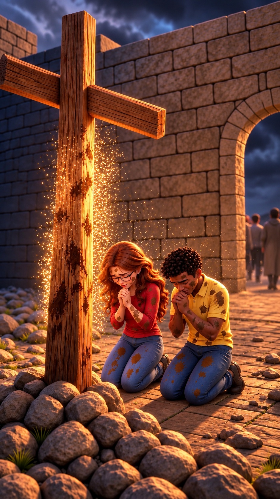
Jesus never sinned. But He died on a cross in our place, like the animals that died for Adam and Eve, like the lamb on the long road.
All our sin was put on Him, and He took the punishment we deserved. Before He died, He cried out, “It is finished!” Jesus did this because He loves us.
Isaiah 53:5–6 · 1 Peter 2:24 · John 19:30On the cross, Jesus made the best trade in history:
He made the one who did not know sin to be sin for us, so that in him we might become the righteousness of God.2 Corinthians 5:21
He is not here, but he has risen!Luke 24:6
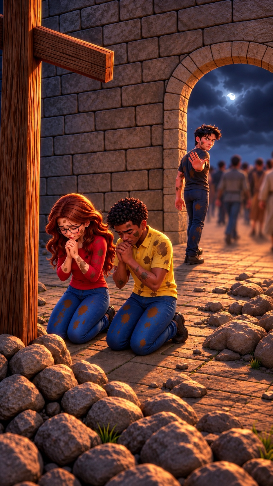
Jesus loves you, and He lets you choose. Some people say, “No thanks,” and walk away.
Others tell God, “I’m sorry for my sin. I believe Jesus died in my place. Please forgive me and save me!” That means turning away from sin and trusting Jesus.
If you confess with your mouth, ‘Jesus is Lord,’ and believe in your heart that God raised him from the dead, you will be saved.Romans 10:9
When we turn to Jesus, God takes our sin away and covers us with Jesus’ goodness, like a brand-new set of clean white clothes.
The marks we could never scrub off? Gone. God says that even if our sins are as red as scarlet, He will make them as white as snow.
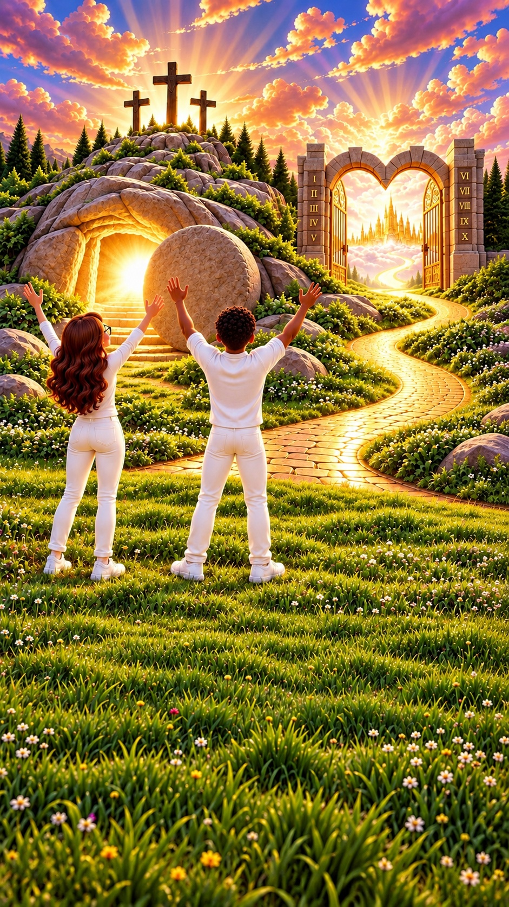
After Jesus died, His friends laid His body in a tomb and rolled a huge stone across the door. Soldiers guarded it.
But three days later, some women came to the tomb early in the morning. The stone was rolled away! An angel said, “He is not here, but He has risen!”
Jesus was alive again! His friends saw Him, ate with Him and touched Him. More than 500 people saw Him at once. He had beaten sin and death!
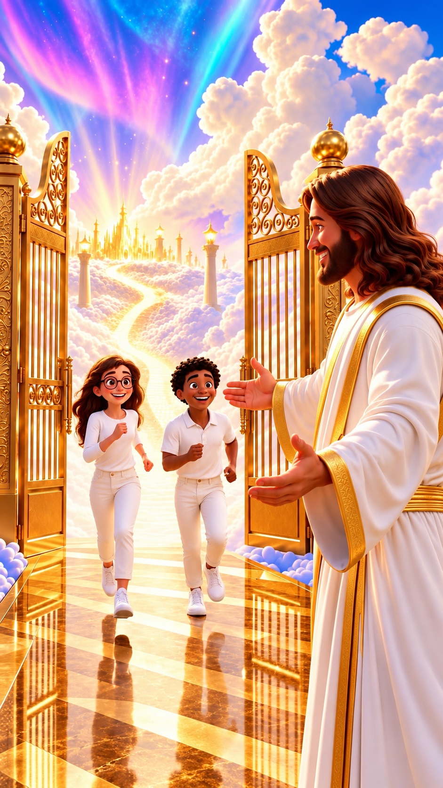
We love because he first loved us.1 John 4:19
After Jesus rose, He went back to heaven. He promised to get a place ready for us, and to come back for us.
One day, everyone who trusts Jesus will run through heaven’s open gates. And Jesus will be right there, with His arms open wide.
The same Jesus who sent Adam and Eve out of the garden will welcome His children home. You can still see the scars in His hands: the scars of His love.
And guess what? God will make everything new: a new heaven and a new earth, even better than Eden! And God Himself will live with His people.
Look, I am making everything new.Revelation 21:5
He will wipe away every tear from their eyes. Death will be no more; grief, crying, and pain will be no more, because the previous things have passed away.Revelation 21:4
The road began at a tree in a garden, where people were locked out. It ends at the tree of life, with the gates wide open forever.
Until that day, Jesus asks you to tell others the good news, so they can find the way back home too.
Now tell the whole story in 7 words. Count them on your fingers!
Here is what it means: A, B, C.
“Dear God, I know I have sinned, and I am sorry. Thank You for sending Jesus to die for me and rise again. Please forgive me and make me clean. I want to follow You. In Jesus’ name, amen.”
Talk with a parent, pastor, or grown-up you trust about what you prayed.
Following Jesus is like walking a road with your best Friend. Here’s how to keep walking:
The people who know Jesus love to tell others, “Come and see! There is a way back to God!” Who will you tell?
One verse for each stop. Learn one a week!
Try these questions after reading together.
Scan to listen to the story read aloud, with music and moving pictures, in many languages. Free, on any phone.
It starts in a perfect garden. It ends in a brand-new world. In between, a promise, a long road, a door, a cross and an empty tomb.
Follow the road through 7 stops, straight from the Bible, and find the way back home.